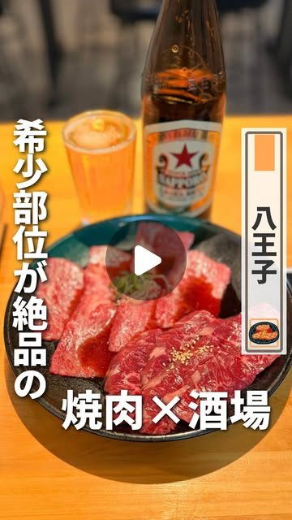

@pekohara802 単独
★★★★★
- 八王子中心を明記する地元特化
- 八王子駅の焼肉PR実績を確認
- 料理・価格・店舗情報を細かく残す保存型
- 駅南口1分という来店障壁の低さを最も活かせる
訴求：「八王子駅南口1分。人生を焼肉に捧げる店の希少部位。」
指定5アカウントの公開プロフィールとリール欄を比較。八王子への送客距離、焼肉との題材相性、通常リールの再生実績、PRの来店導線から「誰に頼むべきか」を結論までまとめました。
八王子特化、同駅圏の飲食店紹介、焼肉PRの実投稿という3つの直接証拠が揃います。フォロワー数だけでなく、来店距離の近さを最優先しました。
まい｜立川・多摩カフェ＆グルメ
焼肉PRで5.3万再生、398いいね、10コメントを確認。大人女性・デート・家族利用の切り口を補完でき、保存から来店へつなぐキャンペーン設計も具体的です。
Tsudoi｜多摩地域グルメ
5.7万人の最大フォロワー規模と、八王子駅前の夜業態紹介を確認。直接性はぺこはらに一歩譲りますが、多摩全域への認知拡張に向きます。
再生が大きい人＝最も来店につながる人、とは限りません。 本選定は八王子駅徒歩1分の実店舗PRなので、広域バズより「八王子の店を探している人への到達」を重く評価しています。
高級一辺倒ではなく、希少部位や極上タンを賑やかな空間で楽しめる“使いやすい本気焼肉”として見せるのが自然です。

@chuo.gurumeとの共同リールは、確認時点で4.5万再生・359いいね。新鮮炙りレバー、極上タン、ザブトン、八王子ホルモン、冷麺を具体価格付きで紹介しています。
分析：すでに「肉のアップ＋価格＋駅1分」の型で反応が出ています。次回は同じ羅列を繰り返さず、最初の3秒を「八王子駅1分」「人生を焼肉に捧げる店」「希少部位」に絞る余地があります。
商圏40%、焼肉・夜業態25%、公開リール実績20%、PRから来店への導線15%で編集評価。費用対効果の保証値ではありません。
| 順位 | アカウント | フォロワー | 通常枠中央値 | 通常枠最高 | 相性の根拠 | 起用判断 | FIT |
|---|
通常枠中央値／最高＝公開プロフィールのリール欄で確認できた上段15枠から、ピン留め表示を除いた投稿の再生数を集計（12〜15本）。公開日数が同一ではないため、到達力の参考値として使用。
実際の投稿ページと一覧表示から確認。伸びた理由と店舗への転用は、公開情報に基づく分析仮説です。
一人だけなら地元到達を取り、二人なら「八王子の発見」と「大人女性の来店理由」を分担します。
★★★★★
★★★★★
多摩全域の新店・夜業態を丁寧に紹介。フォロワー5.7万人で最大。3人目または広域施策向け。
@tachikawa_spotは価格・半額・特典の見せ方が強い。明確な限定特典を設ける場合に再評価。
@hanatama_gourmetは発見力が高い一方、直近の発信はカフェ・ランチ・穴場軸。夜焼肉の送客目的では距離があります。
第一候補には地元の発見型、第二候補には大人女性の選択理由型を依頼します。
起用：@pekohara802
想定ターゲット：八王子勤務・在住の20〜40代、友人飲み、焼肉好き。
見せる順：希少部位盛り→駅導線→極上タン→伝説ユッケ→ホルモンの炎→冷麺→店内。
CTA：「次の八王子飲み用に保存。誰と行く？」
伸びる仮説：地名・駅距離・店名の強い言葉で止め、肉の艶と炎で期待を回収できます。
起用：@mai_tachikawa_gourmet
想定ターゲット：大人女性、カップル、家族の食事、少し特別な夜。
見せる順：上コース全景→極上タン→希少部位4種→厚切りハラミ→乾杯→席→冷麺。
CTA：「誕生日・家族ごはんの候補に保存。」
伸びる仮説：価格を安さではなく、全10品＋飲み放題＋希少部位という価値の束で納得させられます。
八王子駅1分。地元民に覚えてほしい本気焼肉。
この希少部位4種、全部ひと晩でいける。
「人生を焼肉に捧げる」店の肉、見て。
自然投稿のため厳密な同時A/Bテストではありません。同一撮影素材で冒頭だけ変え、店舗公式の再編集版と比較します。
外観説明から始めず、最初の1秒は肉。続く2秒で八王子駅1分と店のコンセプトを伝えます。
| 秒数 | 画 | テロップ | 現場指示 |
|---|---|---|---|
| 0.0–0.8 | 希少部位盛りの最接近 | 人生を焼肉に捧げる店。 | 赤身・サシ・札が一画面に入る角度。4K/60fps、露出固定。 |
| 0.8–2.0 | 極上タンを網へ | 八王子駅南口1分 | 肉を置く動きと焼ける音を同時に。BGM前に自然音を0.3秒残す。 |
| 2.0–3.2 | 店頭→入口 | 焼肉人生ツネちゃん | 駅ロータリーとの距離感が分かる1カット＋看板。 |
| 3.2–4.8 | 伝説ユッケ | まずは、伝説ユッケ | 卵黄を割る瞬間。器全体→箸上げの2カット。 |
| 4.8–6.4 | 極上タン返し | 厚みでわかる、極上タン | 焼き過ぎ前に表裏を1回。断面を見せる。 |
| 6.4–8.1 | 希少部位4種 | 希少部位を食べ比べ | 部位札→肉→焼き上がりをマッチカット。 |
| 8.1–9.6 | 厚切りハラミ | 厚切りハラミ | トングで厚みを見せてから網へ。炎だけで長く引っ張らない。 |
| 9.6–11.0 | 八王子ホルモン | 酒が進む、八王子ホルモン | 脂が落ちて炎が立つ瞬間を斜め45度から。 |
| 11.0–12.5 | コース全景＋乾杯 | 飲み放題付き 6,050円〜 | 価格は投稿前に再確認。テーブルを詰め込み過ぎない。 |
| 12.5–14.0 | 店内と座席 | 一人でも、仲間とでも | カウンター→テーブル。実際の利用者の顔は許可なく映さない。 |
| 14.0–15.6 | 冷麺を持ち上げる | 〆は八王子冷麺 | 麺上げを正面。湯気ではなく透明感と麺の動きを出す。 |
| 15.6–18.0 | 看板＋盛り合わせ | 次の八王子飲み用に保存 | 店名、八王子駅南口1分、位置情報。予約導線を本文へ。 |
縦9:16、4K/60fps。色温度を固定し、肉は斜め後方から補助光。網上は自然音を別録り。
未確認の「八王子No.1」「予約困難」「生で食べられる」。価格・コース内容は撮影日に再確認。
第一候補へ依頼し、条件が合えば第二候補で別客層を重ねます。
@pekohara802へ、八王子のフォロワー比率、直近PRの保存数、費用、二次利用期間を確認。
希少部位盛り、極上タン、伝説ユッケを第一候補に。提供可否と当日価格を確定。
肉単品・焼き・店内・入口を開店前に確保。営業中は乾杯と賑わいだけを追加。
保存、プロフィール遷移、予約、「Instagramを見た」来店、コース注文を記録。
確認できない数値は推測せず、公開事実と編集判断を分けています。
確認日時：2026-10-01 12:46 JST。Instagramの保存数、シェア数、視聴維持率、フォロワー居住地、広告配信の有無は非公開のため取得していません。再生数は投稿テーマ、経過時間、ピン留め等の影響を受けます。プロフィール一覧で確認できた通常投稿12〜15本を比較し、取得できた範囲以上の数値は補完していません。